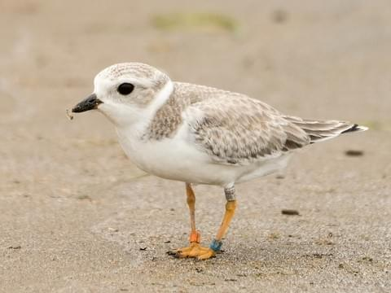
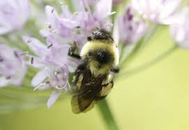
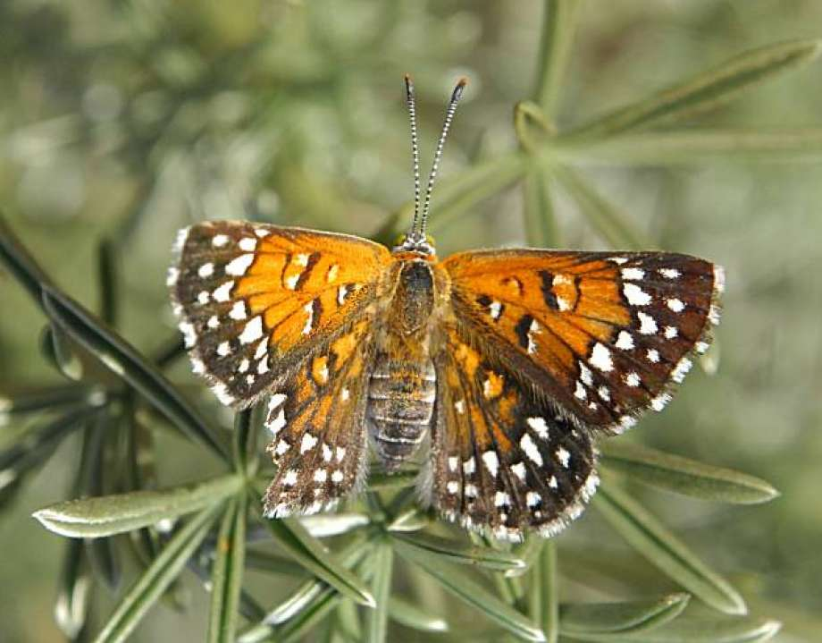

The Bald Eagle (Haliaeetus leucocephalus) is the only eagle unique to North America. After nearly disappearing from most of the United States decades ago, the bald eagle is now flourishing across the nation, and particularly in the upper Midwest. Bald eagles can reach great heights when flying. Using thermal convention currents, they can climb to up to 3000 m (10,000 ft.) in the air. A good way to help bald eagles is to educate the public about the birds’ habitat requirements. Encourage shore property owners to limit the clearing of trees near the water, and advocate for less development in eagle habitat.
Piping plovers (Charadrius melodus) are small shorebirds approximately seven inches long with sand-colored plumage on their backs and crown and white underparts. During winter, the birds lose the black bands, the legs fade to pale yellow, and the bill becomes mostly black. In recent decades, piping plover populations have drastically declined, especially in the Great Lakes. Breeding habitat has been replaced with shoreline development and recreation. Availability of quality foraging and roosting habitat in the wintering grounds is necessary in order to ensure that an adequate number of adults survive to migrate back to breeding sites and successfully nest.
For the first time in history, several American bee species have been classified as endangered. There are many factors that have contributed to the decline in bee populations in recent years, with climate change being at the root of many of these issues. In the United States, the only bees that have been added to the endangered species list are seven species of Hawaiian yellow-faced bees. One of the largest threats to bees is the lack of habitat due to urban sprawl. If you notice a lack of green space in your neighborhood, you can volunteer to plant a bee garden or create a habitat corridor with nectar-rich plants such as wildflowers.
Lange's metalmark butterfly has a lifespan of about a year, but very little of that time is spent as an adult, fluttering around the refuge. Most of the lifespan is spent as an egg, a larva or a pupa. Each butterfly's life begins as a tiny egg, which is laid in late summer on withering leaves at the base of a buckwheat plant.